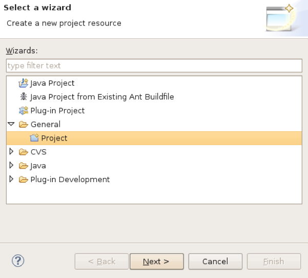
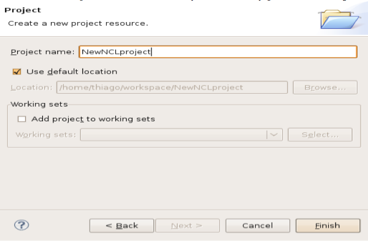
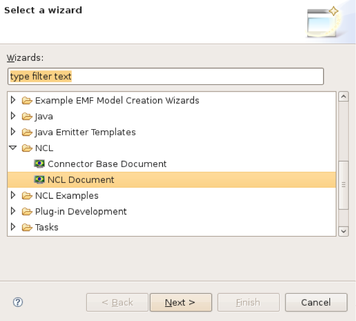
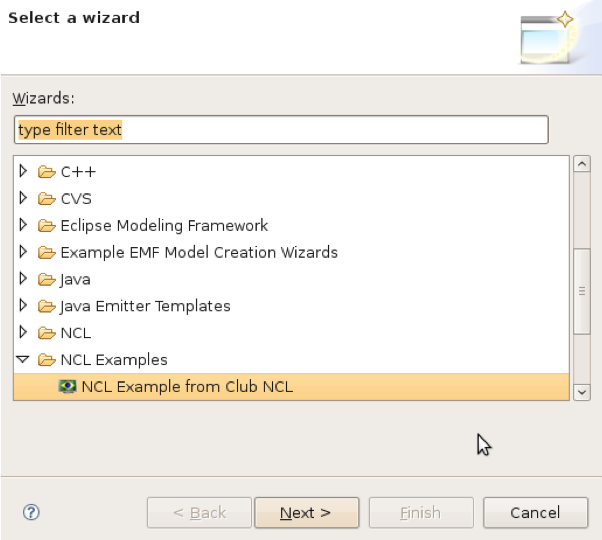

Criando documentos e projetos:
- 1. Todos os documentos no eclipse devem estar dentro de um projeto, então é necessário primeiro criar um projeto.
-
-
Vá em "File>New>Project":

-
- 2. Selecione a pasta "General" e "Project" como na figura acima e clique em "Next".
-

- Digite o nome do seu novo projeto e clique em "Finish".
- 3. Criado o projeto, agora você deve incluir um arquivo NCL dentro desse projeto.
-
-
Vá em "File>New>Other":

- Selecione a pasta "NCL", então você terá duas opções de arquivo: uma para criar um arquivo NCL e outra para criar um conector. Para criar um documento NCL, escolha a opção "NCL Document", para criar um conector, a opção a ser escolhida deve ser "Connector Base Document". Clique "Next".
-
- 4. Na tela seguinte, na opção "Container" você deve digitar o nome do projeto que você criou. Em "Id" deve ficar o nome do arquivo NCL. Clique em "Finish".
-

- Agora você está apto para escrever sua aplicação NCL. Parabéns!!
Rodando Aplicação NCL:
- Para rodar a aplicação NCL, você deve clicar com o botão direito em cima do projeto, escolher a opção "Run As->NCL Presentation".
Importando um exemplo do NCL clube:
- Lembre-se que é necessário ter conexão com a internet.
-
Vá em "File->New->Other", nas pastas procure por "NCL Examples->NLC example from NCL CLUB".

-
Clique em "Next", na janela aparecerá os exemplos disponíveis, selecione um e clique "Next", digite um nome do novo projeto para onde o exemplo irá ser importado e clique "Finish".